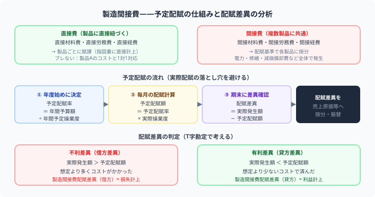

日商簿記2級 | 公開：2026年5月9日 | 更新：2026年6月27日
【簿記2級】製造間接費の予定配賦・配賦差異を完全解説
T字勘定・シュラッター図・差異仕訳まで例題つき
著者：大谷 一輝（大阪経済大学3回生・日商簿記1級勉強中）
この記事でわかること（5秒まとめ）
- 製造間接費＝製品に直接ひもつかない工場コスト——電気代・減価償却費・工場長の給料など
- 予定配賦額＝予定配賦率×実際操業度——月末を待たず製品原価に乗せるために「予定」を使う
- T字勘定の「左に差額」→不利差異（プラス調整）、「右に差額」→有利差異（マイナス調整）
- シュラッター図で予算差異・操業度差異に分解——配賦差異の原因を2つに切り分ける
製造間接費は工業簿記の核心です。「なぜ予定を使うのか」「差異がプラスかマイナスか」「どこで調整するのか」の3点が本試験の得点に直結します。T字勘定の左右で判断する方法を覚えれば、緊張した試験会場でもド忘れしません。
受
有利差異がプラスかマイナスか、いつも本番で混乱してしまいます。
暗記で覚えようとすると本番で飛びます。T字勘定の「差額がどちら側に出るか」を見るだけで判断できる方法を覚えましょう——焦らなくて大丈夫です。
師
受
シュラッター図も出てくるんですが、何を求めているのかよくわからないです……
シュラッター図は「配賦差異の内訳を知りたい」ときに使います。「予算どおりにコストを使えたか（予算差異）」と「工場をどれだけ稼働させたか（操業度差異）」の2つに分解できます。図の形を先に覚えてから計算式に入ると理解が早いですよ。
師
🏭 製造間接費とは——直接費と何が違うのか

図：直接費 vs 間接費の分類→予定配賦率設定→毎月配賦→配賦差異（有利・不利）の判定
製造間接費は「予定配賦率 × 実際操業度」で各製品へ配賦し、実際発生額との差額を期末に配賦差異として処理するのが基本の流れです。
製品を作るコストのうち、「製品Aにいくらかかったか」と直接結びつけられるものが直接費、結びつけにくいものが間接費（製造間接費）です。
| 費目 | 直接費の例 | 製造間接費（間接費）の例 |
|---|
| 材料費 | 製品の主要材料 | 補助材料・工場消耗品 |
| 労務費 | 製品を直接作る作業員の賃金 | 監督者給料・間接作業賃金 |
| 経費 | 外注加工費など | 電力料・工場減価償却費・工場家賃 |
「間接費」の判断基準：「製品A専用かどうか」で考えましょう。工場全体の電気代は製品A専用ではないので製造間接費。製品Aを作るためだけに買った材料は直接材料費です。
⏱️ なぜ「予定配賦」を使うのか——実際配賦の落とし穴
製造間接費の実際発生額（電気代の請求書など）は月末にならないと確定しません。でも製品の原価計算は月の途中でも必要です。そこであらかじめ決めた「予定配賦率」を使って月中に配賦します。
予定配賦の計算式
① 予定配賦率 ＝ 製造間接費予算額 ÷ 基準操業度
② 予定配賦額 ＝ 予定配賦率 × 実際操業度
⚠️ よくある間違い：予定配賦率に予定操業度をかけてしまう
予定配賦額 ＝ 予定配賦率 × 実際操業度
予定操業度（基準操業度）は配賦率の計算に使うだけで、配賦額の計算では実際操業度を使います。
例題（予定配賦額の計算）
製造間接費予算額：120,000円、基準操業度：400h（直接作業時間）、実際操業度：350h。予定配賦額を求めなさい。
計算
予定配賦率 ＝ 120,000 ÷ 400h ＝ 300円/h
予定配賦額 ＝ 300円 × 350h ＝ 105,000円（← 仕掛品へ配賦する額）
仕訳（予定配賦時）
仕掛品 105,000/製造間接費 105,000
📊 配賦差異——T字勘定の「左右」で判断する
月末に実際発生額が確定したとき、予定配賦額とずれた分が配賦差異です。「プラスかマイナスか」を正確に判断するために、T字勘定の形を使います。
例題（配賦差異の判断）
実際発生額：112,000円、予定配賦額：105,000円。配賦差異を求め、有利か不利かを判断しなさい。
製造間接費 T字勘定で差異の位置を見る
借方（左）── 実際にかかった費用
実際発生額112,000
← 差額7,000が左に出た
不利差異（プラス調整）
貸方（右）── 仕掛品に配った予定額
予定配賦額（仕掛品へ）105,000
もし右に差額が出たら
有利差異（マイナス調整）
T字勘定の左右ルール（これだけ覚える）
左（借方）が大きい ＝ 実際 ＞ 予定 ＝ 不利差異（予想より多くかかった）＝ プラス調整
右（貸方）が大きい ＝ 予定 ＞ 実際 ＝ 有利差異（予想より安く済んだ）＝ マイナス調整
簿記では「左（借方）＝プラス・増加」が基本ルール。T字勘定の差額が左に出ると「まだ費用が足りない」→ プラスして補う。
社長の視点で覚える「もう迷わない」ストーリー
❌ 不利差異——「うわ、想定外に高かった！」
「電気代10万円くらいかな」と見積もって製品を作っていた。月末の請求書を見たら11.2万円だった。
→ 予定より1.2万円多くかかった（損した）
→ 実際のコストに合わせるために プラス して修正
⭕ 有利差異——「節電成功！安く済んだ！」
「電気代10万円くらいかな」と見積もっていた。節電が功を奏して実際は9万円で済んだ。
→ 予定より1万円安く済んだ（得した）
→ 配りすぎていた分を マイナス して修正
差異の仕訳
不利差異（実際 > 予定）の場合——差異を借方（左）に立てる
製造間接費配賦差異 7,000/製造間接費 7,000
有利差異（予定 > 実際）の場合——差異を貸方（右）に立てる
製造間接費 X,XXX/製造間接費配賦差異 X,XXX
📈 シュラッター図——配賦差異を「予算差異」と「操業度差異」に分解する
配賦差異（全体の差）は2つの原因から発生します。シュラッター図を使って分解すると、「コストの使いすぎか（予算差異）」「工場を稼働させすぎたか・させなすぎたか（操業度差異）」が明確になります。
例題（シュラッター図）
- 製造間接費予算額（月額）：変動費 60,000円、固定費 80,000円
- 基準操業度（月）：400h、実際操業度：350h
- 実際発生額：136,000円
計算手順
1
予定配賦率を計算
予定配賦率 ＝ (60,000 ＋ 80,000) ÷ 400h ＝ 350円/h
（変動費率 150円/h、固定費率 200円/h）
2
予定配賦額（仕掛品に配った額）
350円 × 350h ＝ 122,500円
3
製造間接費予算額（実際操業度ベース）
変動費：60,000 × 350/400 ＝ 52,500円
固定費：80,000（固定だから操業度に関係なく同じ）
合計：132,500円
4
予算差異（コストの使いすぎ？）
132,500（予算）－ 136,000（実際）＝ ▲3,500円（不利差異）
5
操業度差異（工場の稼働率の問題）
固定費率（200円）× (350h－400h) ＝ ▲10,000円（不利差異）
6
配賦差異（合計）の確認
予算差異（▲3,500）＋ 操業度差異（▲10,000）＝ ▲13,500円（不利差異）
検算：予定配賦額（122,500）－ 実際発生額（136,000）＝ ▲13,500 ✓
| 差異の種類 | 計算式 | 意味 | 金額 |
|---|
| 予算差異 | 予算額（実際操業度ベース）－ 実際発生額 | コストの使いすぎ・節約 | ▲3,500（不利） |
| 操業度差異 | 固定費率 × (実際操業度 – 基準操業度) | 工場稼働率の問題 | ▲10,000（不利） |
| 配賦差異（合計） | 予定配賦額 – 実際発生額 | | ▲13,500（不利） |
操業度差異のポイント：基準より実際操業度が少ない（工場が暇だった）と不利差異になります。固定費（工場家賃など）は稼働しなくてもかかるので、「フル稼働しなかった分のコストがムダになった」という考え方です。
🔗 配賦差異はどこで調整するか——CRかP/Lか
計算した配賦差異を「どの書類のどこに書くか」は、製造原価報告書（CR）の記事で詳しく解説しています。
⚔ Study Quest で工業簿記を攻略しよう
製造間接費・配賦差異・シュラッター図の学習記録をRPG感覚で管理。試験日まで継続できます。
無料で始める →
📋 まとめ：製造間接費 解き方チェックリスト
予定配賦額の計算予定配賦率 × 実際操業度（予定操業度ではない）
不利差異 vs 有利差異T字勘定の左に差額→不利（プラス）、右に差額→有利（マイナス）
予算差異予算額（実際操業度ベース）－ 実際発生額 → コスト管理の評価
操業度差異固定費率 × (実際操業度 – 基準操業度) → 工場稼働率の評価
差異の調整場所問題文の指示でCR末尾かP/L売上原価かが決まる
よくある質問
❓ 予定配賦率を計算するときの「基準操業度」とは何ですか？
年間の製造間接費予算額を設定する際に基準とする操業度（通常、一年間の平均的な直接作業時間など）です。予定配賦率の分母として使い、実際には予定配賦額の計算では実際操業度を使います。
❓ 不利差異が「プラス」というのが直感に反します。なぜですか？
製造間接費を予定額（少ない額）で仕掛品に配賦したので、実際額との差分が「足りていない」状態です。実際のコストに合わせるために「足りない分を加算する（プラス）」と考えると自然です。T字勘定の借方（左）に差額が出る＝まだ残っている費用＝プラスして計上、と覚えましょう。
❓ 予算差異と操業度差異の違いは何ですか？
予算差異はコストの使いすぎ（節約）を示します。例えば電気代の節電に成功すれば有利な予算差異になります。操業度差異は工場の稼働率の問題で、固定費を基準より少ない操業で負担した（工場が暇だった）場合は不利な操業度差異になります。どちらも「どの部門のどの責任者が改善できるか」の管理会計的な分析に使います。